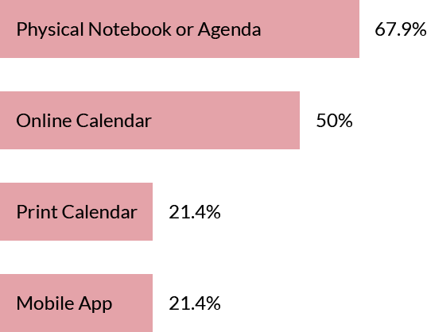
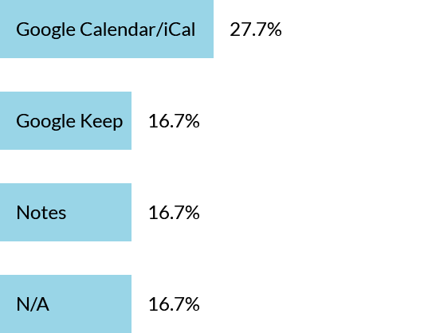

01
Background
The Inspiration
After moving to D.C. in 2013, I started working at a private school for students with language-based learning differences. Over the course of five years, I had the opportunity to see students' executive functioning and organization skills first-hand.
The school provided physical planners in which the students kept track of their nightly assignments and long-term deadlines. Each year, I heard students utter the same wish: "I wish there was an app for this." Challenge accepted.
02
Research
Surveying Students
I set out to get feedback from a wide variety of learners with a two-pronged approach. First, I used a Google Form to collect preliminary data from 28 people (parents, older students, and adults reflecting on their time as students).
How do you keep track of homework assignments?
What is your favorite tracking app/website?
I wanted to hear from younger students as well, so I followed up with in-person interviews with eight students in grades 4-12.
Eyeing The Competition
My initial user research proved helpful in gathering intel on competitors. 27.7% of respondents cited Google Calendar or iCal as their tracking method of choice. I performed SWOT analyses on Google Calendar along with two other key players in the planning sphere: Wunderlist and myHomework.
Opportunities:
- Narrowing the focus of the app (NOT for general to-do lists, really geared towards students and homework planning)
- Integrating a calendar view with the assignment list
- Displaying long-term deadlines on the same screen as assignments to allow for better planning
Obstacles:
- Introducing an app in a saturated market of well-known, trusted brands like Google
- People aren’t students forever, so the customer lifespan is limited
- Too many layout options could dilute the brand identity -- what will the app look like for the majority of users?
Identifying The Users
Through my initial research, I identified three key demographics that I wanted to learn more about: younger students, adult learners, and teachers. I set up interviews with a representative from each group. From these interviews, I crafted user personas that I would want to keep in mind throughout the design process.

The Typical Student: Meg, an 8th grade student. Her biggest struggle is remembering everything she needs to bring home to successfully complete her homework. She often forgets things in her locker, resulting in evening trips back to school.

The Graduate Student: Carrie, a 27-year-old woman who is working on her Master's Degree. She likes using a calendar to keep track of assignments, but finds it difficult to stay on top of long-term deadlines.

The Teacher: Craig, a 26-year-old high school science teacher. He wants to help his students learn executive functioning skills before they head off to college. Since his students are "always on their phones," he thinks it's important that they use their phones for keeping track of homework.
03
Architecture
Going with the Flow
After in-person interviews, I began drafting user stories and user flows for my homework planning app.
I took these flows and mapped the needed screens of the app on Draw.io.

From Sketches Wireframes
I started out with 4-Up Sketches to get a host of ideas out on paper. From there, I used Balsamiq to clean up some sketches and get a set of low-fidelity wireframes mapped out.
I dropped these into a lo-fi invision prototype for some testing. From here, I reworked my wireframes based on feedback. One of the largest iterations I made at this early stage was trying out two layouts for the homepage: a list view v. a card-based view. As you'll see, the card view ended up being more successful and this home layout was introduced in the high-fidelity wireframes.

High Fidelity Wireframes
I used Sketch to create high-fidelity wireframes, and uploaded them into another invision prototype. I used this hi-fi invision prototype with Maze to conduct testing.

Testing, Testing...
Adapting to actual users’ needs was key to my design process. Through testing, I identified a few points of confusion that I was able to iterate upon before proceeding to the visual design of the app.
The tab bar was confusing. In the first iteration of the app, I made the tab bar buttons action items (e.g. "+ Assessment"). During testing, I noticed multiple users thinking that these tab bar buttons would lead to a more informative page (when asked to view all upcoming assessments, they would click the "+ Assessment" button).
The backpack feature was in no-man's land. In my wireframes, I had the backpack icon up in the top right corner of the app. This icon would lead users to a list of supplies they needed to bring home at the end of each day. As the tab bar changed, however, it didn't make sense to separate the backpack view from the rest of the tab bar items.
Iteration: I changed the tab bar so that clicking an icon would lead the user to a "view all" screen. From that screen, they could then add a new assignment or assessment. I also nested the backpack feature into the tab bar, so the user could easily browse their home screen, assignments, assessments, and backpack from one navigation area.
04
Branding
Before diving into high fidelity mockups, I needed to develop a brand identity for the app.
Brainstorming
I started out by mindmapping symbols, concepts and actions related to homework planning.
The Name
I wanted the name to be fun and light-hearted in order to appeal to younger users, but I also needed it to emphasize certain features of the app. I fused the concepts of organization and outer space (a play on the "space" the app would provide for planning) to create the name "PlanIt".
The Mood
As I began to craft a mood for PlanIt, I decided to really lean in to the space theme. I pulled an initial color palette from astrophotography, incorporating blues, purples, and a goldenrod accent color.

The Logo
As the name "PlanIt" fused the concepts of organization and outerspace, I wanted a mark that would emphasize the same ideas. I started off with a Saturn-like planet to strengthen the name of the app, but used a paperclip instead of rings to bring in the theme of organization and planning.
The Style
When choosing a font for the app, I knew I wanted something modern to fit with the “space” theme. Roboto fit the bill: clean, yet warm; spacious, yet friendly; and, most importantly, extremely readable.
I used Roboto consistently to maintain legibility, but chose a few distinct typefaces to set headings and action items apart. At this point, I also started brainstorming how these fonts would be applied to the future product showcase website (for more on the showcase website, view the case study).
05
Mockups
I applied the space-themed color palette and fonts to my wireframes and tightened up the design to create PlanIt's high-fidelity mockups.
Yikes! As this was my first-ever app design, I went a little nuts at the beginning. I applied too many colors and made the interface far too busy. I took a step back and did some research. To start, I read through Apple's iOS style guide start to finish. Then, I browsed hundreds of other contemporary app designs for inspiration. Finally, I discussed my design with peers and more experienced professionals. I simplified my color palette and took a second stab at the overall app design.
Iterating & Simplifying. I went with a dark UI to reduce eye strain as students would hopefully be referencing PlanIt throughout their homework process. I trimmed the color palette down to purplish greys, white, and a bright pink accent color for action items.
With a simpler design built off of the recommended iOS style guide, I created high-fidelity mockups to match a series of task scenarios that I would use in my final testing. I uploaded these to invision, ran some in-person and virtual walkthroughs with Maze, and also ran a few preference tests to make some final design tweaks.

Iterating on the Add Button
The bright pink color I used for action items was very bright. In order to make it easier on the eyes, I made my add button smaller and used linework rather than filled-in buttons.
From Home Page to Calendar View
As so many people during my initial user research said they liked using a calendar for tracking homework, I incorporated a calendar view in the app. Users can toggle between card view and calendar view right from the home screen.
06
Takeaways
1. Take time for in-depth testing.
Research needs to inform design decisions. Jumping ahead in the design process doesn’t save time. The most successful aspects of PlanIt's design came when I took time to really listen to what people needed. Multiple iterations resulted in a stronger end product.
2. Question assumptions.
I used to work in the education sphere, so I came to the table with a fair number of assumptions. A good designer questions their biases. Even if some of my ideas turned out to be right, it was important for me to confirm through testing and research. When my assumptions were wrong, I needed to be flexible and adapt my ideas to fit the needs of others.
3. Cliches aside, less really is more sometimes.
My first stab at iOS design was too colorful and cluttered. I took time to read over the iOS style guide and looked to other apps for inspiration. This led to a much cleaner design that allowed for better legibility and a more modern, mature feel.